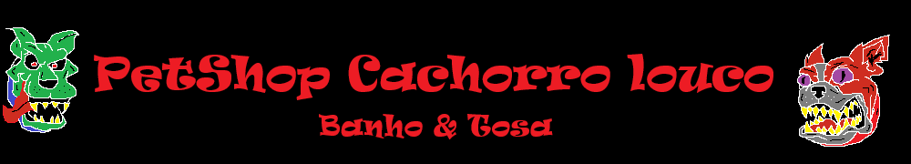

|
 |
| Home | Produtos | Contato | Quem Somos |
|---|
Quem SomosNós da Petloucos somos especializados em banho e tosa em cachorros e gatos que são bravos e raivosos. Seu cão ou gato é brabo? Traz ele aqui pra nós trocar uma ideia! Somos o Petshop Cachorro Louco, uma empresa criada para oferecer carinho, cuidado e produtos de qualidade para os animais de estimação que são raivosos e maluquinhos. Trabalhamos com banho, tosa e produtos para cachorros e gatos. Nosso objetivo é fazer com que cada pet seja tratado com muito amor e respeito mesmo ele sendo meio crazy. Nossa missãoCuidar dos pets e proporcionar uma experiência tranquila, segura e agradável para os animais e seus donos. Nosso compromissoOferecer um atendimento de qualidade, sempre colocando o bem-estar dos animais em primeiro lugar. |